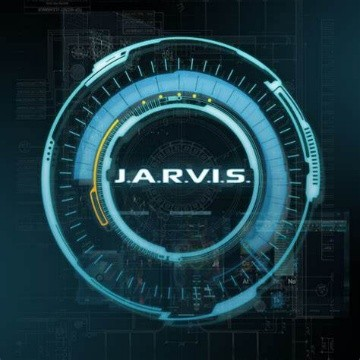
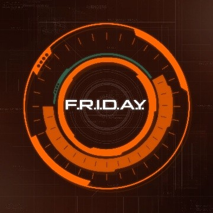
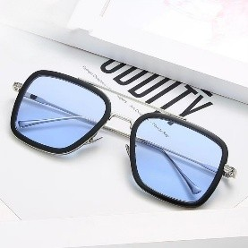
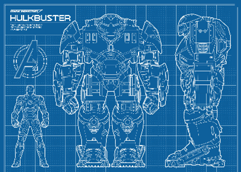

Olá
Minha armadura nunca foi uma distração ou um hobby. Era um casulo. E agora, eu sou um novo homem. Podem levar minha casa, todos os meus truques e brinquedos. Mas uma coisa nunca poderão tirar de mim: eu sou o Homem de Ferro." ―Tony Stark

Qualificações
Experiencias:
Fundador dos Vingadores
CEO das Indústrias Stark
IDIOMAS
Inglês (Nativo)
Francês (Fluente)
Alemão (Intermediário)
Mandarim (Básico)
Latim (Técnico)
Espanhol (Intermediário)
Formação
Instituto de Tecnologia de Massachusetts (MIT) | Cambridge, EUA
Bacharelado em Engenharia Elétrica
Bacharelado em Física
Centro Universitário Braz Cubas (UBC) | Mogi das Cruzes, BRASIL
Bacharelado em Ciência da Computação
Projetos
Reator Arc

Fonte de energia avançada no peito de Tony Stark. Mantém ele vivo e alimenta a armadura com energia quase ilimitada.
Mark I

Primeira armadura feita por Tony com sucata numa caverna. Era pesada e básica, mas essencial como protótipo.
Mark LXXXV

A Mark 85 é uma armadura viva, moldável e versátil, feita de milhões de nanorrobôs controlados pela mente e sistemas de Tony Stark, alimentada pelo reator arc.
J.A.R.V.I.S.
Inteligência artificial criada por Tony. Atua como assistente e controla sistemas da armadura com precisão e agilidade.
F.R.I.D.A.Y.
Substituta de J.A.R.V.I.S., é uma IA com voz feminina que auxilia em tempo real no combate e no controle da armadura.
EDITH
Sistema de IA integrado a óculos que dá acesso a drones, vigilância global e análise de dados via comando de voz.
Hulkbuster
Armadura gigante feita para enfrentar o Hulk, reforçada para resistir a força extrema e conter o herói caso perca o controle.
Helicarrier

Base voadora da S.H.I.E.L.D. usada como centro de operações, equipada com armas, tecnologia e suporte para agentes.